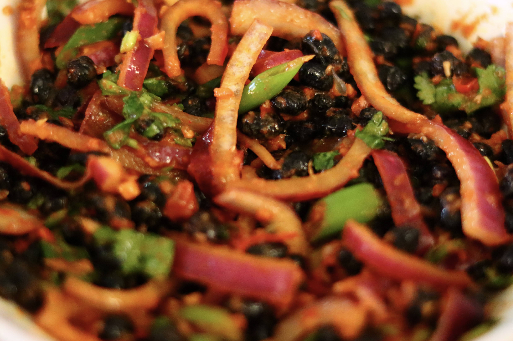

Black Soybean Salad

Description
Soybean salad is a very common Nepalese snack. It is enjoyed either as a side dish, or simply with cold beer.
Ingredients
- 1 cup dried black soybeans
- 1 fresh green chili pepper, chopped
- 1 red onion, chopped
- 1 medium tomato, chopped
- 2 tablespoon gingergarlic paste
- 2 green onions, chopped
- coriander leaves, chopped(handful)
- 1 teaspoon lemon juice
- 1 teaspoon red chili powder
- salt as per taste
- 1 teaspoon oil
Steps
- Stir fry soybean in a pan for 4-5 minutes. Put the soybean in a bowl and set aside.
- Heat oil in the same pan, saute the ginger garlic paste for about 30 seconds.
Add the chopped tomatoes and saute for another 4-5 minutes until soft.
- In a large bowl, mix the soybean, cooked tomato and the rest of the ingredients. Enjoy!